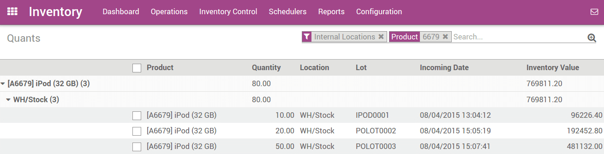

Overview
Removal strategies are usually in picking operations to select the best products in order to optimize the distance for the worker, for quality control purpose or due to reason of product expiration.
When a product movement needs to be done, Odoo will find available products that can be assigned to shipping. The way Odoo assign these products depend on the removal strategy that is defined on the product category or on the location.
Configuration
In the Inventory application, go to :

Check Track lots or serial numbers, Manage several location per warehouse and Advanced routing of products using rules, then click on Apply.
Then, open and open the location on which you want to apply a removal strategy.

Types of removal strategy
FIFO ( First In First Out )
A First In First Out strategy implies that the products that were stocked first will move out first. Companies should use FIFO method if they are selling perishable goods. Companies selling products with relatively short demand cycles, such as clothes, also may have to pick FIFO to ensure they are not stuck with outdated styles in inventory.
Go to , open the stock location and set FIFO removal strategy.
Let's take one example of FIFO removal strategy.
In your warehouse stock (WH/Stock) location, there are 3 lots of iPod
32 Gb available.
You can find details of available inventory in inventory valuation report.
Create one sales order 25 unit of iPod 32 GB and confirm it.
You can see in the outgoing shipment product that the Ipod 32
Gb are assigned with the oldest lots, using the FIFO removal
strategy.

LIFO (Last In First Out)
In this warehouse management, the products which are brought in the last, moves out the first. LIFO is used in case of products which do not have a shelf life.
Go to , open the stock location and set LIFO removal strategy.
In our example, let's check the current available stock of Ipod 32 Gb
on WH/Stock location.

Create a sale order with 10 units of Ipod 32 Gb.
You can see in the outgoing shipment product that the Ipod 32
Gb are assigned with the newest lots, using the LIFO removal
strategy.

FEFO ( First Expiry First Out )
In FEFO warehouse management, the products are dispatched from the warehouse according to their expiration date.
Go to . Check the option Define Expiration date on serial numbers. Then click on Apply to save changes.

It will allow you to set best before date, end of life date, alert date and removal date on the serial number. Go to .

- Best Before Date: This is the date on which the goods with this serial number start deteriorating, without being dangerous yet.
- End of Life Date: This is the date on which the goods with this serial number may become dangerous and must not be consumed.
- Removal Date: This is the date on which the goods with this serial Number should be removed from the stock.
- Alert Date: This is the date on which an alert should be notified about the goods with this serial number.
Products will pick first with expiry date (removal date), So you have to set removal date on lot/serial numbers.
To set the removal strategy on location, go to and choose FEFO.

Let's take an example, there are 3 lots of ice cream available in
WH/Stock location: LOT0001, LOT0002, LOT0003 with
different expiration date.
| Lot / Serial No | Product | Expiration Date |
|---|---|---|
| LOT0001 | Ice Cream | 08/20/2015 |
| LOT0002 | Ice Cream | 08/10/2015 |
| LOT0003 | Ice Cream | 08/15/2015 |
We will create a sale order with 15kg of ice cream and confirm it.
The outgoing shipment related to sale order will make the move based on removal strategy FEFO.
It will take 10kg from LOT0002 and 5kg from LOT0003 based on the
removal dates.